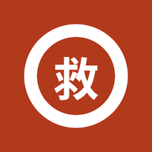
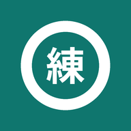
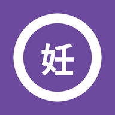
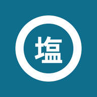

病棟アプリ
該当するアプリがありません
☆ お気に入り
よく使う（最近開いた5件）
各アプリの右の ☆ を押すとお気に入りに入ります。
救急・脳卒中

ER業務支援ナビ（主訴別の初期対応・薬剤・スコア）
再開通療法 適応チェッカー（rt-PA・血栓回収）
NIHSS評価
抗血栓薬ナビ（脳卒中二次予防）
神経診察・局在
神経診察チェック（カルテ定型文・局在ナビ連携）
神経病巣局在ナビ
MMTナビ（徒手筋力テスト・神経支配）

神経局在トレーニング（症候から病巣を当てる）
神経疾患の治療
抗てんかん薬ナビ（重積の推奨・薬の選択）
頭痛ナビ（急性期・予防・CGRP関連薬）
神経免疫治療ナビ（MG・NMOSD・CIDP）
自己免疫性脳炎・脳症 鑑別ナビ
認知症外来ナビ
MDS-UPDRS 評価ツール

妊娠・授乳と神経疾患薬ナビ
内科・全身管理
糖尿病治療ナビ（病棟用）
高血圧治療ナビ（病棟用）
脂質異常症治療ナビ
感染症治療ナビ
漢方ナビ

低Na・電解質補正ナビ（補正上限・3%食塩水・過補正の戻し方・高Na/K/Mg）
書類・制度・紹介
指定難病・制度ナビ（重症度・臨個票・介護保険・身障手帳）
主治医意見書 自立度判定（寝たきり度・認知症自立度）
肢体不自由 等級判定ナビ（身障手帳 診断書1枚目の下書き）
脳神経クリニック紹介先検索
院内業務
院内内線（データは暗号化して端末内のみ）
QCストーリー支援（パレート図・特性要因図・効果確認）